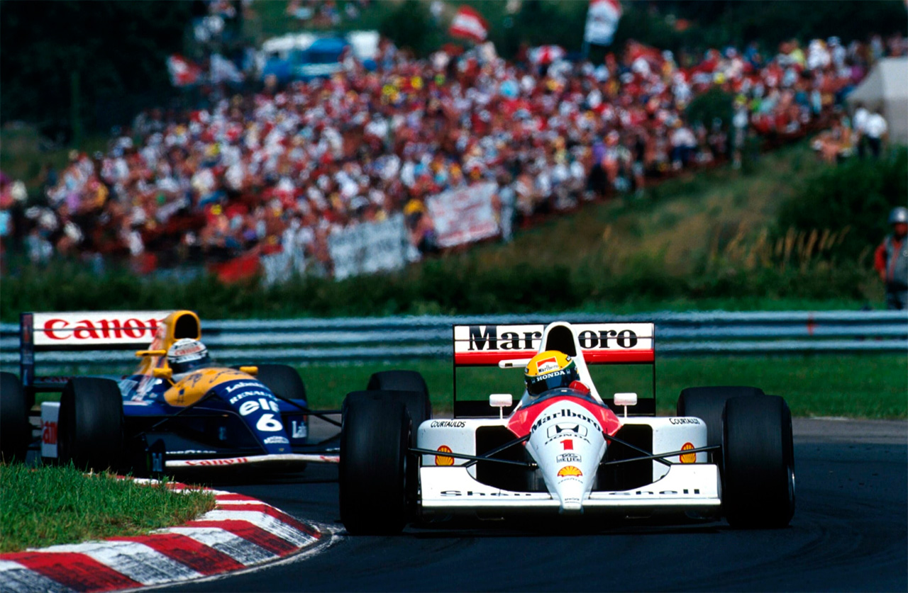
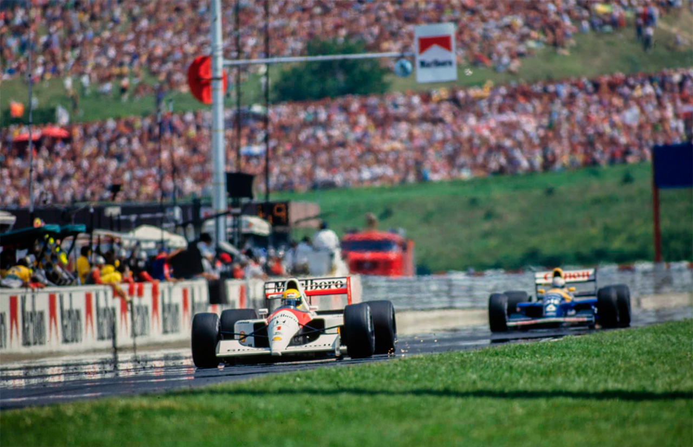
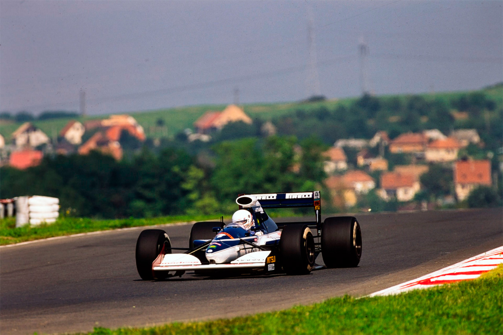
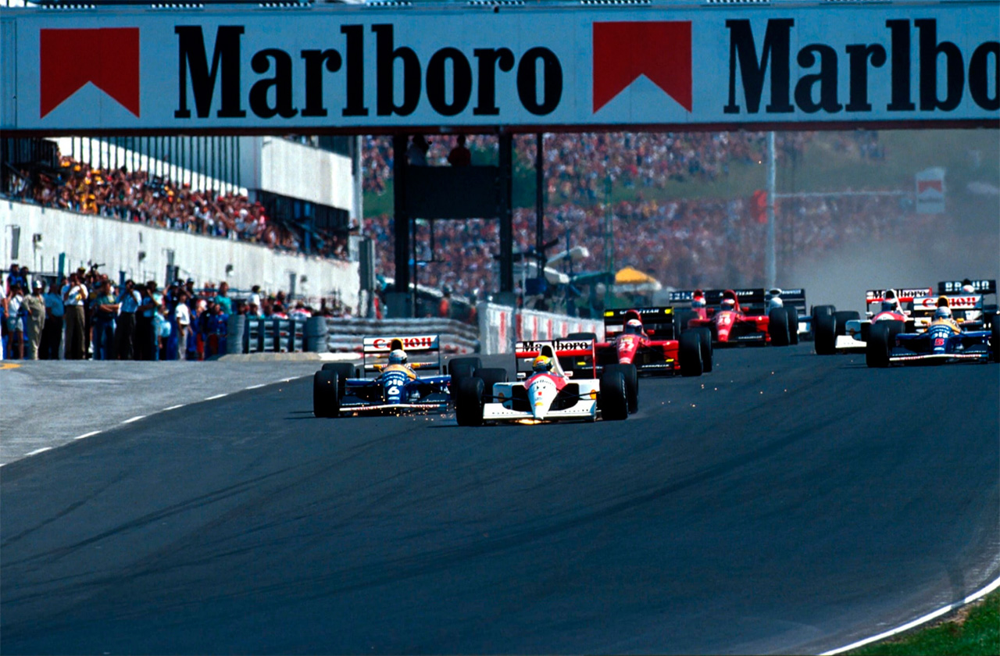
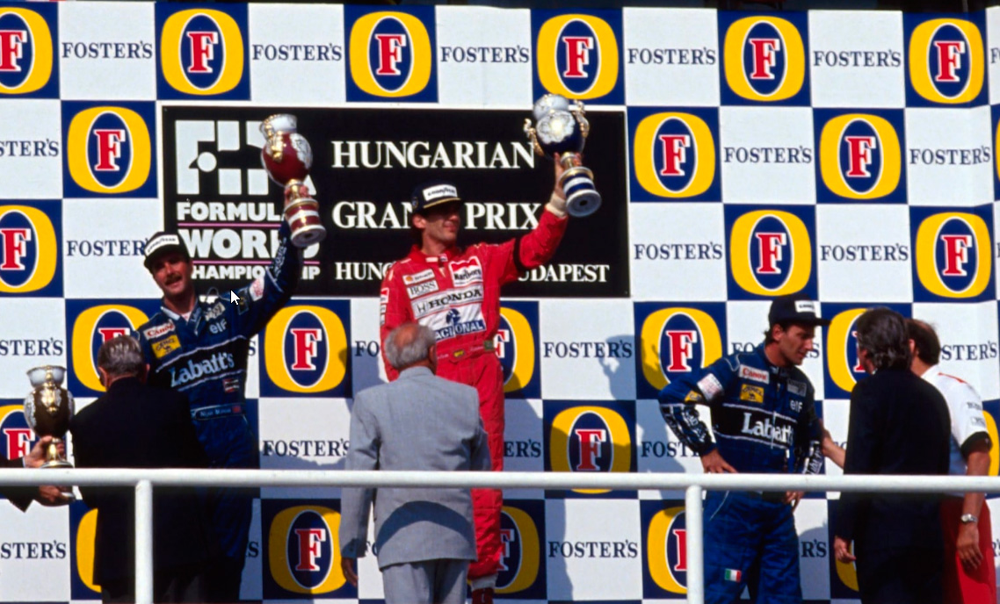

Hungaroring - 11/08/1991
Senna reduz pressão de Mansell

McLaren acorda do pesadelo, dá a Ayrton a possibilidade de dominar [pole e vitória de ponta a ponta] e recupera liderança no campeonato de equipes. Williams com problemas: Mansell 2° e Patrese 3°. Primeiro ponto para motor Ilmor. McLaren usa câmbio semi-automático nos treinos.
Por Francisco Santos
Ayrton Senna soltou esta frase de alívio depois dos treinos; "há muitos anos que não me lembro de ter estado tanto tempo sem conquistar a pole position" - foi a frase de alívio de Ayrton Senna depois dos treinos. "Foi a primeira vez desde Mônaco que fui para uma prova pensando que poderia ganhar" - pode ele afirmar depois da corrida. Ayrton e a McLaren/Honda/Shell estavam realmente de volta depois de um longo e perturbador jejum de 5 GPs em que foram totalmente dominados pela Williams/Renault/Elf. Graças a um intensivo programa de estudos e de testes, que envolveu em Silverstone na semana deste GP 5 pilotos, 60 pessoas e 3 carros, tanto McLaren, com um chassis e carroceria revistas, mais leve e com aerodinâmica melhorada, como Honda com algumas melhorias no seu motor V12 série 3, como ainda Shell, com várias gasolinas especiais, puderam proporcionar a Ayrton um equipamento mais competitivo. Coincidentemente, a Williams, que nos últimos anos tem sempre andado muito bem nesta pista húngara, com Patrese dominando há dois anos, mas não levando, e com Boutsen vencendo de ponta a ponta no ano passado, este ano não conseguiu acertar os carros e ficou muito aquém do esperado. Nos treinos, Ayrton bateu o record anterior em 2s e as Williams em mais de 1,2s graças a motor e gasolina de qualificação! Na corrida, Patrese e Mansell quase conseguiram passar para a frente do trem expresso húngaro, mas Ayrton conseguiu sempre manter a dianteira. Problemas de freios dificultaram e afastaram as ameaças de Patrese e Mansell, que tiveram de se contentar com o terceiro e segundo lugares, respectivamente.

Poucas ultrapassagens
Julgo ter sido Domingos Piedade o autor da frase que já ficou célebre, e que eu plageei no texto de Magny-Cours, sobre este circuito: "esqueceram-se de fazer as retas". Eu iria mesmo mais longe: neste traçado é ainda mais difícil ultrapassar do que em qualquer dos circuitos de rua. Além de ser muito sinuoso, com uma sequência de curvas que dificulta ao máximo a ultrapassagem, o asfalto de Hungaroring tem muito pouca aderência, o que ainda dificulta mais a vida aos pilotos. A FISA havia imposto aos organizadores a modificação do traçado, mas nada foi feito, possivelmente devido as divergências entre a proprietária dos terrenos e Bernie Ecclestone, o que não daria à americana muita garantia de retorno do investimento adicional. Em face de tudo isso passou a ser muito provável que a F1 não volte a Budapeste tão cedo. As ultrapassagens aqui continuam sendo possíveis apenas no retão, a não ser em manobras muitas vezes suicidas como já se viram nos últimos anos, algumas com acidentes. Por isso todas as corridas são autênticas procissões em alta velocidade, com os carros em trem, com a locomotiva que for na frente tendo toda a vantagem. Até porque com a igualdade de performances dos carros e a perda de apoio aerodinâmico causado por andar atrás de outro carro é muito difícil ultrapassar em zonas sinuosas. Pole e primeira curva ganham importância capital.
Domínio Brabham
Os dois Brabham Yamaha voltaram a mostrar vantagem enorme sobre os demais na pré-qualificação, com Blundell a superar Brundle devido a uma avaria elétrica deste que o obrigou a usar o carro-reserva. Por isso a diferença de l,4s entre os dois, e ter sido menor a vantagem em relação aos outros - 1,1 s sobre Grouillard, o terceiro a passar, logo seguido de Alboreto, que só conseguiu eliminar Tarquini nos últimos minutos da sessão. Para Pedro Chaves é que não houve, de novo, qualquer possibilidade, ficando mais uma vez com o último tempo. Para piorar a situação do desconhecimento da pista e da falta de treino, Enzo Coloni decidiu montar uma nova suspensão dianteira e um novo bico, que alteraram profundamente o comportamento do carro, agora com "reações mais bruscas que o tomam, eventualmente, mais rápido depois de eu me adaptar a elas", apontava Pedro. Com tais alterações, Pedro deu uma rodada sem mais consequências. Mas, de novo a bomba da gasolina pifou e foram perdidos 14 minutos no box.

Cheiro de novidades
A grande novidade foi a presença pela primeira vez do McLaren reserva com o câmbio semi-automático que Ayrton Senna usou nos primeiros treinos livres, tendo, inclusive, rodado. Maior surpresa foi no entanto a falta de adaptação do chassis Williams a este traçado, depois de dois anos de hegemonia nesta pista. De tal forma que nas cinco sessões de treinos os pilotos da Williams nunca conseguiram melhor que o terceiro tempo, fosse nos treinos livres, nos de qualificação ou no warm-up em que, nova surpresa, Prost foi o melhor seguido de... Gachot. Algo de errado se passava com a Williams. Além de um eventual excesso de confiança na atual forma e na sua vantagem no Hungaroring, terá sido a diferente regulagem aerodinâmica para esta pista prejudicial ao equilíbrio do carro? Mas, mais surpresas estavam reservadas: a Ferrari trazia um novo sistema de admissão com trompetas de comprimento variável. A Leyton House tinha uma suspensão dianteira diferente que equilibrava melhor o carro, e Ivan Capelli andou sempre entre os melhores, ficando com o 9º tempo. Mas, mais surpresa ainda foi o 7º tempo de Pirro. Ou não seria surpresa mesmo, porque a vantagem dos pneus Pirelli na qualificação numa pista como esta era de considerar, principalmente pelo fato dos pilotos poderem fazer duas ou três voltas rápidas. Para as Benetton esta vantagem foi contrabalançada pelos problemas persistentes do câmbio. Na qualificação final Piquet e Moreno tiveram de se revezar com o mesmo carro, pois os câmbios dos dois outros tinham estourado. De qualquer forma, a pole de Senna, com pneus GoodYear foi mais um prodígio de mágica, mesmo tendo em conta os novos "pós" que Honda e Shell lhe proporcionaram. Dois segundos menos que a pole do ano anterior e 1,3s melhor que Patrese. Fazia tempo, três longos meses de martírio McLaren, que Ayrton não estava na pole.

Candeia que vai à frente...
O importante é sair na frente. Largar bem e, principalmente, sair da primeira curva na frente, é de primordial importância aqui. Riccardo Patrese, até treinou especialmente as largadas, para ver se conseguia suplantar o fantasma das largadas falhadas deste ano. No entanto, nem os treinos conseguiram bater Ayrton. No Domingo, embora Patrese tenha feito a sua melhor largada do ano, e o motor de corrida da Renault tenha tido mais aceleração do que o Honda, Ayrton, largando do lado esquerdo e mais limpo da pista, chega à primeira curva ao lado de Patrese, que estava por dentro, mas com a trajetória mais rápida, o que lhe permite atacar mais rápido e, numa manobra arrojada, de arrepiar, tomar o comando ao manter, imperturbável, a sua trajetória quase tangente ao bico da Williams. Senna na frente atacando. Uma visão já quase esquecida. Mas, neste caso, muito significativa, para esta prova e para o campeonato. Ayrton sabia que tinha de ganhar a maior vantagem possível até o início do retão, para a Williams não usufruir do seu vácuo, o que que daria a possibilidade de tomar o comando na freada para a primeira curva. Mesmo assim. na segunda volta Patrese ainda mostrou o bico a Senna, mas não estava suficientemente perto para realmente tentar a ultrapassagem. Foi a sua tentativa mais próxima. Nas 44 voltas seguintes continuaria, no entanto, pressionando suficientemente perto para não permitir que Senna abandonasse o mesmo ritmo, tanto mais que Mansell seguia logo atrás de Patrese, pronto para tomar o testemunho de ataque, caso houvesse algum problema com o italiano. E, houve. Os freios da Williams começaram a perder eficácia, e Patrese teve de diminuir o ritmo. Na 46ª volta, vendo que não podería aguentar o ritmo, e que Mansell colara nele, abre para deixar passar o seu colega de equipe, que imediatamente encosta em Senna. No entanto, Ayrton consegue manter a liderança defendendo sempre as suas trajetórias, principalmente na primeira curva em que Mansell atacava forte. O problema de freios também começou a afligir Mansell, e o britânico achou melhoir não arriscar e desistiu dos ataques a Senna, mantendo o seu segundo lugar para salvar os seis pontos, tanto mais que nesta pista com pouco atrito não iria haver paradas de box para a maioria dos carros e portanto não haveria possibilidade de sequer ganhar a prova nas boxes.
Lá para trás, a grande distância dos líderes, três grupos se formaram desde o início: o primeiro liderado por Berger, com Alesi e... Capelli; o segundo, composto por Lehto e Brundle; e o terceiro, com uma feroz luta entre Modena, Piquet, Moreno, Gachot, De Cesaris e Boutsen. Alesi e Capelli foram os únicos da frente a trocar de pneus, classificando-se em 5º e 6º, respectivamente. Foi o primeiro ponto da Leyton House este ano, e o primeiro da história para o motor Ilmor. Brundle teve de abandonar com caimbras, e Gachot, embora mais atrasado, também trocou de pneus já perto do final e ao voltar à pista foi naturalmente o mais rápido, fazendo a melhor volta da corrida. A 3ª marcha da Benetton de Piquet insistia em saltar fora, pelo que ele tinha de pilotar segurando a manete do trambulador. "Não adiantava mais, e por isso parei", foi a explicação de Piquet para o abandono. Morenou foi 8ª. Modena e Pirro se desentenderam na primeira volta, causando o atraso a muitos pilotos que os precediam. Gugelmin foi um deles, mas talvez o mais prejudicado: pensou que tinha colhido detritos e tinha furado e decidiu parar; em vão, porque não tinha qualquer furo. Continuou e pressionou até terminar em 11º. Pela primeira vez este ano os dois Leyton House terminavam uma corrida.
